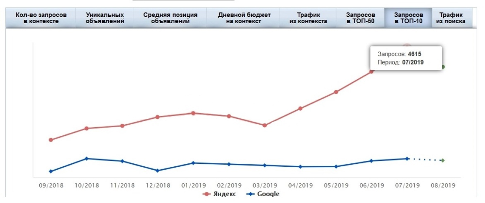
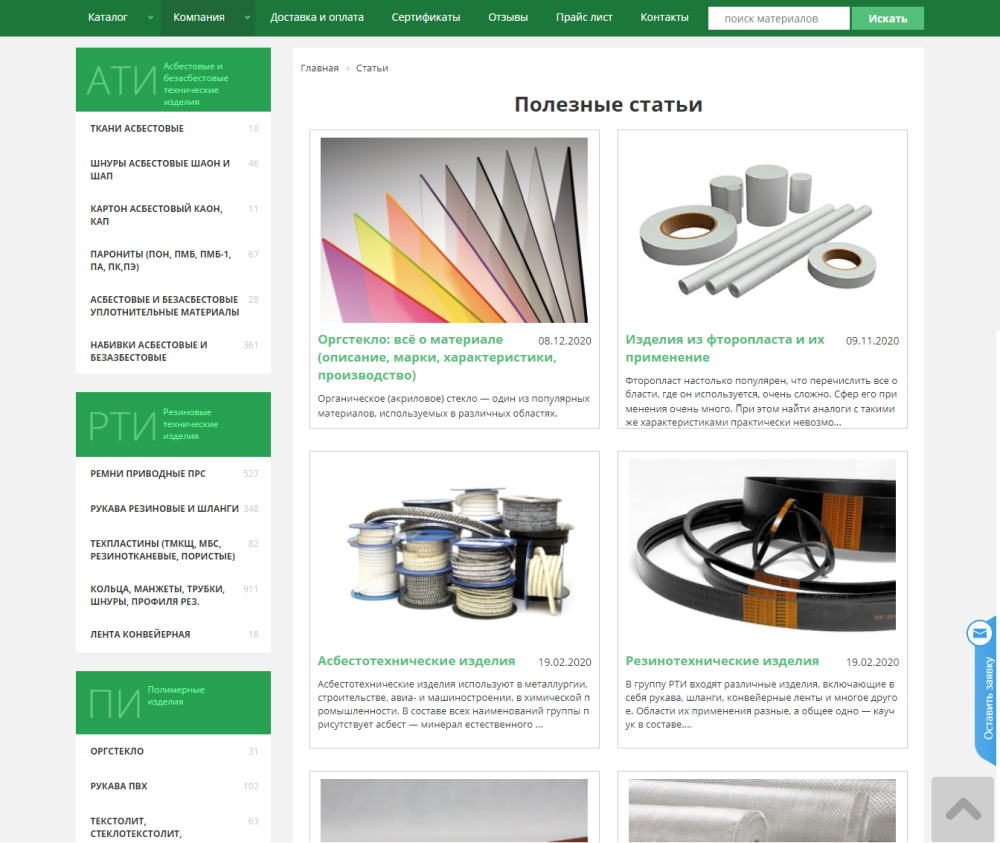
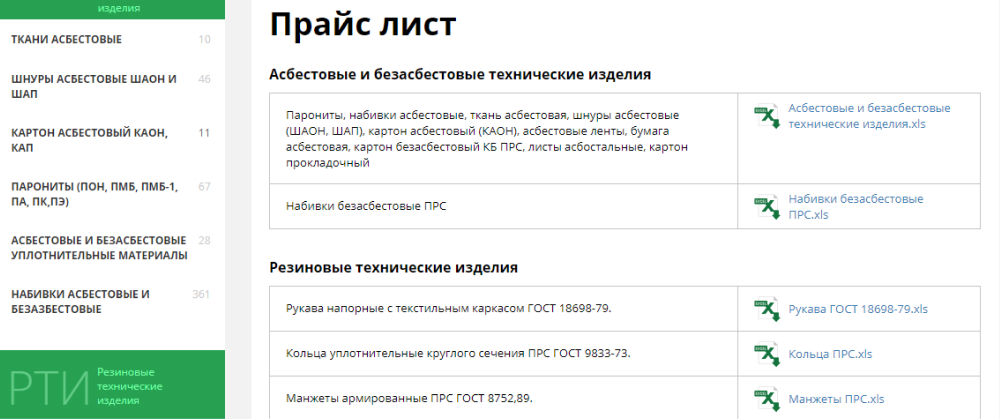
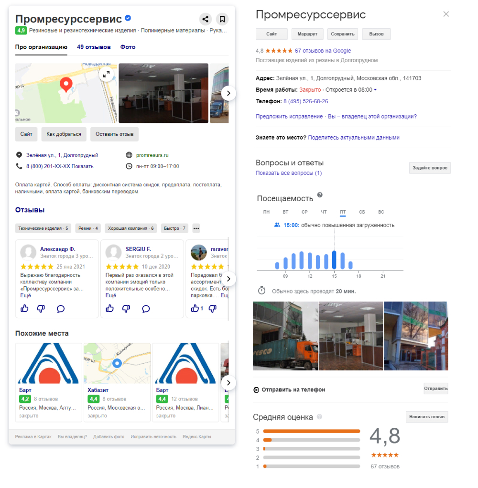
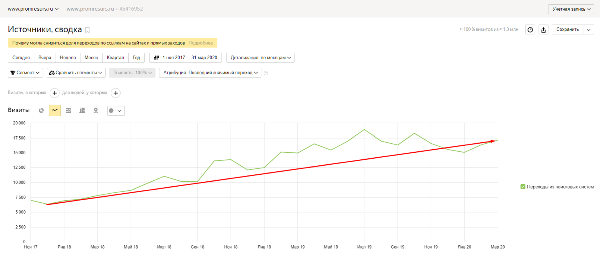

Центр комплексного снабжения предприятий «ПРОМРЕСУРССЕРВИС» - крупнейший в России поставщик полимерных и резинотехнических изделий. Предприятие располагает собственным производством. ЦА компании – как оптовики-промышленники, так и розничные потребители.
Мы начали работу с клиентом в 2017 году. Руководство не устраивало количество заявок с сайта. Чтобы найти причины проблем с трафиком, мы провели SEO-аудит сайта.
Сайт клиента работал на CMS 1С-Битрикс. Мы начали работу с технического аудита и по его итогам приняли решение об исправлении ошибок на сайте. Нам предстояло:
В первые месяцы работы мы сразу же сменили хостинг, которым пользовался клиент. Так мы избавились от проблемы постоянного «падения» сайта, которое негативно сказывалось на удобстве пользователей и росте продаж.
Robots.txt и Sitemap.xml – важнейшие для индексации сайта файлы. В них содержатся подсказки и рекомендации для поисковых роботов о том, на какие страницы заходить стоит, а какие посещать нежелательно.
В robots.txt мы запретили индексацию технических разделов интернет-магазина и неуникальных страниц (вроде страницы подтверждения заказа или политики конфиденциальности). В конце robots.txt указали ссылку на sitemap.xml, содержащем ссылки на все страницы сайта, которые уже подлежат индексации поисковыми системами.
Теги title, H1 и description — важные факторы, по которым поисковики определяют тематику страницы. Очень важно их правильно заполнить согласно запросам из семантического ядра. Для главной страницы и наиболее приоритетных разделов мы прописали уникальные теги вручную, а для категорий и подкатегорий подготовили шаблон генерации.
В 2017 году клиент входил в ТОП-10 по 800 запросам. Чтобы обойти конкурентов, мы пересобрали семантику для всех разделов сайта.
Всего за 2 года нам удалось выйти в ТОП-10 уже 4,6 тыс. запросов.
На базе собранной семантики переработали плохо оптимизированные статьи на сайте.
Полностью изменили статейный раздел с конверсионными блоками. Впоследствии это сказалось не только на позициях сайта в выдаче, но и на росте заявок.
Мы провели исследование и поняли, что большая часть постоянных оптовых клиентов редко закупает большие партии товара сразу. Сначала товар нужно изучить и «пощупать». На сайте клиента не было минимальной стоимости покупки. После долгих совещаний мы доказали заказчику преимущества снижения планки для минимальной стоимости заказа. Ранее у нас были успешные кейсы, когда приходилось увеличивать количество заказов по минимальной стоимости, чтобы через несколько месяцев покупатель превратился в постоянного оптового клиента. Мы проработали этот момент, добавив в каталог простой прайс-лист.
Одна эта простая деталь помогла нам поднять количество обращений, что положительно сказалось и на ранжировании сайта в поисковых системах.
Качественные внешние ссылки для поисковиков – один из важнейших факторов ранжирования, а также свидетельство об авторитетности ресурса. Мы проанализировали внешние ссылки у конкурентов и составили план по их размещению. Для наращивания ссылочной массы подобрали анкорные и контекстные ссылки.
В дополнение к сделанному, доработали карточку организации в Google My Bussiness и Яндекс.Справочнике. Это упоминание компании в сети и хороший источник трафика.
«От лица компании ООО "Промресурссервис" выражаю слова благодарности специалистам компании ООО «Качество Исполнения» за успехи, достигнутые в рамках договора по продвижению нашего сайта: www.promresurs.ru в поисковиках Яндекс + Гугл в регионах Москва + Россия. Вы зарекомендовали себя как надежный Деловой партнер, сотрудничество с которыми приносит удовольствие!
За несколько месяцев сотрудничества мы оценили на сколько ответственно и внимательно вы подходите к своему делу. И в знак доверия и профессионализма наша компания подписала новый договор уже по разработке личного кабинета для клиентов нашего интернет-магазина. Уверены, что качество исполнения нашего проекта будет на высоте!
Мы желаем компании Quality Performance финансового процветания, стабильного развития и новых, интересных проектов!»
Генеральный директор В.Б. Мацюк